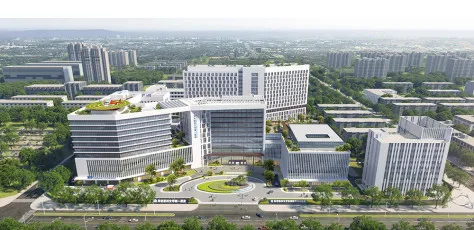

河北医科大学第一医院医学人工智能实验室招聘启事
原文：https://mp.weixin.qq.com/s?__biz=MzAwMzIzOTk5OQ==&mid=2247532350&idx=2&sn=1a7d62c09e8e77f4cd6f00419eda5fe0&chksm=9b3c066eac4b8f78c8203c047e15313bd27b834d1372e74715cbf1e2c41d8c585748b0727236#rd 合集：求职/求学/招聘
01
写在前面
我们长期发布招聘/求职板块(甚至我给自己都发了求职：Biomamba求职| 国奖+4篇一作SCI)，欢迎各位老师/老板欢迎联系~我们也在招贤纳士Biomamba生信基地秋季招聘开启！其它需要求职的小伙伴也欢迎把简历发给我们[Biomamba_zhushou]，大家一起找工作/学习。用人单位也可以联系我们免费刊登招聘信息~
02
ABOUT US

河北医科大学第一医院医学人工智能实验室以深化医学人工智能研究为基础，以推动协同育人为使命，以临床应用转化为导向，服务医院“医-教-研-产”深度融合和医学科研成果持续转化。
实验室自建有基于英伟达H100和H20的24P高性能算力集群。同时，可调用合作算力中心更为庞大的高性能计算平台资源，为大规模数据分析与模型训练提供了坚实的算力支撑。本实验室汇聚了一支近20人的跨学科研究团队，成员皆来自海内外顶尖机构，专业背景多元且前沿，涵盖医学、人工智能、生物信息等多个关键领域。团队氛围融洽、协作紧密，形成了“懂医学、精AI、善创新、能落地”的独特核心竞争力。实验室与美国梅奥医院、清华大学等国内外知名机构长期合作，兼具国际化视野与国内前沿优势。凭借创新的研究与应用模式，实验室已顺利开展AI大模型开发与应用、AI影像多模态数据分析、AI多组学分析等前沿方向。同时，可全方位支持项目申请、平台建设、成果转化以及产业合作等各项工作，未来发展前景广阔。根据团队建设需要，拟公开招募AI药物设计方向的团队成员，要求如下:
03
JOIN US
一、招聘人数
2人 二、任职要求 1、博士学历，专业为计算化学、计算生物学、药物化学、药学、结构生物学、生物物理、化学信息学、计算机科学与工程等相关专业，特别优秀者学历可适当放宽； 2、在药物设计、化合物筛选、AI/ML算法开发等领域有实质研究经验，有肿瘤药物开发背景尤佳；3、熟练搭建AI药物研究工具链，熟悉主流药物设计平台及药物信息学工具包，能够完成从分子建模到虚拟筛选、生成式设计的完整流程；4、精通PyTorch/TensorFlow框架，熟悉Transformer、VAE、GAN、Diffusion及强化学习等AI生成模型的构建与训练，具备较强的算法开发与编程能力；5、以第一作者（含共一）发表至少1篇SCI论文（IF>5）； 6、具有团队合作精神，有较强的学习能力和解决问题的能力，良好的沟通与表达能力。 三、工作职责1、运用深度学习与生成模型等前沿人工智能算法，基于多组学及临床、影像、生物样本等多模态数据，开展药物靶标识别、机制研究、命中化合物筛选与先导优化，助力AI药物信息学研究；2、协同团队成员，结合人工智能算法与多组学数据，设计具有特定药理活性的新分子结构，开展药物再定位、联合用药预测及药物响应模型构建，推动精准医疗与系统药理学研究；3、参与搭建与维护AI驱动的药物设计研发平台，与临床多学科团队密切协作，推进从计算设计到实验验证再到临床应用的转化研究。 四、岗位待遇1、符合条件者经正式招聘后纳入编制，办理聘用手续、订立聘用合同；2、五险一金、提供竞争力的薪资待遇；3、周末双休、法定节假日全休、法定年假及医院各项福利；；4、符合条件者入职后可申请评聘大学教授带学生；5、优秀者可按单位政策一事一议。

联系方式
 联系人：张老师简历发送邮箱：lianzhang1989@foxmail.com
联系人：张老师简历发送邮箱：lianzhang1989@foxmail.com